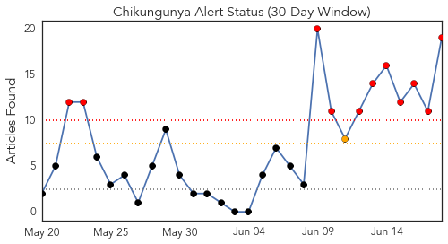
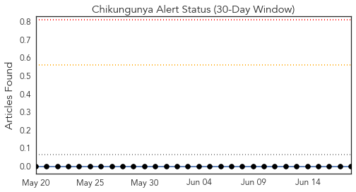
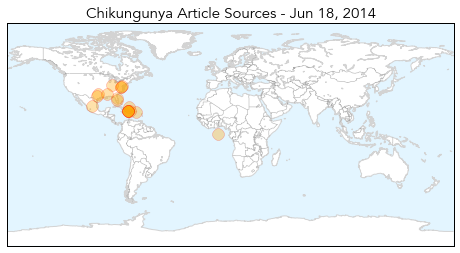

Chikungunya
30-Day Web Trend
11 alerts, 1 warnings

30-Day Twitter Trend
0 alerts, 0 warnings

Article Locations
Article Confidences
Top Articles:
- 0.999
- Mosquito-borne virus serious threat, Chikungunya spread continues
- 0.999
- New mosquito-borne virus is a threat, experts say
- 0.999
- Mosquito Borne Chikungunya Virus Showing up in the United States
- 0.999
- Nasty Mosquito-Borne Virus, Now in Puerto Rico, Expanding its Reach
- 0.998
- Mosquito virus strikes TCI
- 0.996
- New mosquito-borne illness concerns pest management pros : Augusta Free Press
- 0.995
- Cuba confirms first six cases of chikungunya virus
- 0.994
- Health Officials Confirm Two Cases of Chikungunya Fever
- 0.994
- Cuba: 6 cases of chikungunya virus in travelers
- 0.993
- Chikungunya virus in Cuba confirmed in 6 travellers
- 0.987
- U.S. chikungunya cases more than double in one week
- 0.987
- Miss. may have 1st case of mosquito-borne virus
- 0.983
- Agonizing Mosquito-Borne Virus Hits US with No Cure
- 0.983
- African Viral Disease Spreads - World
- 0.980
- Cuba confirms first 6 cases of Chikungunya virus
- 0.972
- Health Check: Chikungunya Virus Hits Virginia
- 0.958
- Local health officials comment on mosquito-borne illness
- 0.914
- Health officials address two cases of chikungunya fever found in Leon County
- 0.847
- Chikungunya Fever discovered in Flagler County
Top Tweets:
-
No tweets found for Jun 18, 2014
Ebola
30-Day Web Trend
7 alerts, 0 warnings

30-Day Twitter Trend
1 alerts, 0 warnings

Article Locations

Article Confidences

Top Articles:
- 1.000
- Liberia Works to Contain New Ebola Outbreak Amid Renewed Fear
- 1.000
- West Africa Ebola death toll hits 337, reports WHO
- 1.000
- Doctors Aren't Sure How To Stop Africa's Deadliest Ebola Outbreak : Shots
- 1.000
- Death toll from Ebola outbreak in West Africa reaches 337
- 1.000
- Ebola Deaths Pass 300 In West Africa
- 1.000
- Ebola deaths pass 300 in West Africa
- 1.000
- Alaska Public Media
- 1.000
- Ebola resurfaces in Liberia - News
- 1.000
- Doctors Aren't Sure How To Stop Africa's Deadliest Ebola Outbreak
- 0.999
- Ebola Virus Records 337 deaths in West Africa-WHO
- 0.999
- الاخبار المصورة
- 0.999
- What Happens to Your Body When You Get Ebola?
- 0.999
- Liberian official: 7 more deaths linked to Ebola
- 0.999
- UPDATE 2-Death toll from West Africa Ebola hits 337 -WHO
- 0.998
- Death toll from West Africa Ebola hits 337 -WHO update
- 0.997
- UPDATE 2-West Africa Ebola outbreak spreads to Liberia's capital, four dead
- 0.992
- Ebola: Sirleaf consoles hospital staff on death of colleague - News
- 0.986
- Ebola deaths on rise in Sierra Leone
- 0.930
- President Sirleaf sympathises with Ebola victim
- 0.773
- Briefs: Egypt hunger strike ends in freedom
- 0.743
- Health Minister Miatta Kargbo Mocks Nurse who died of Ebola
Top Tweets:
- 0.689
- Ebola W Africa sharp increase. Between WHO figs published June 10 & 17, 98 more recorded deaths. Total cumulative deaths since March - 337